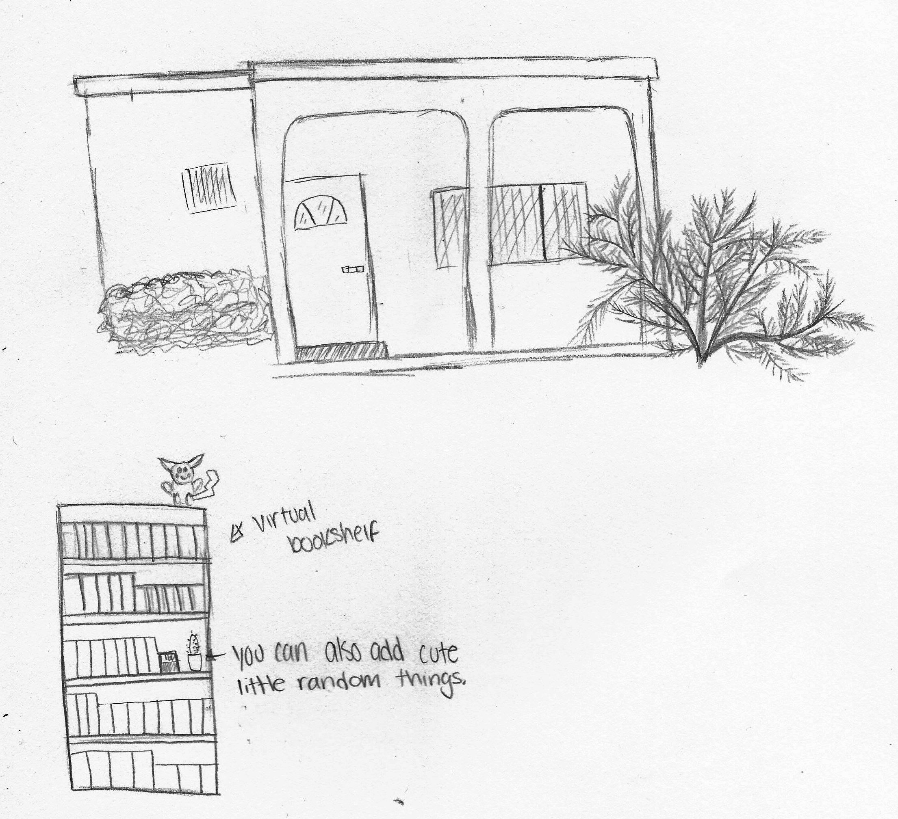
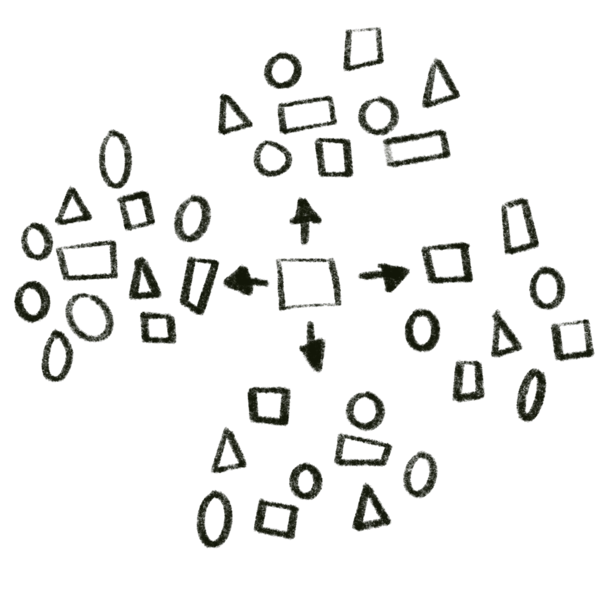
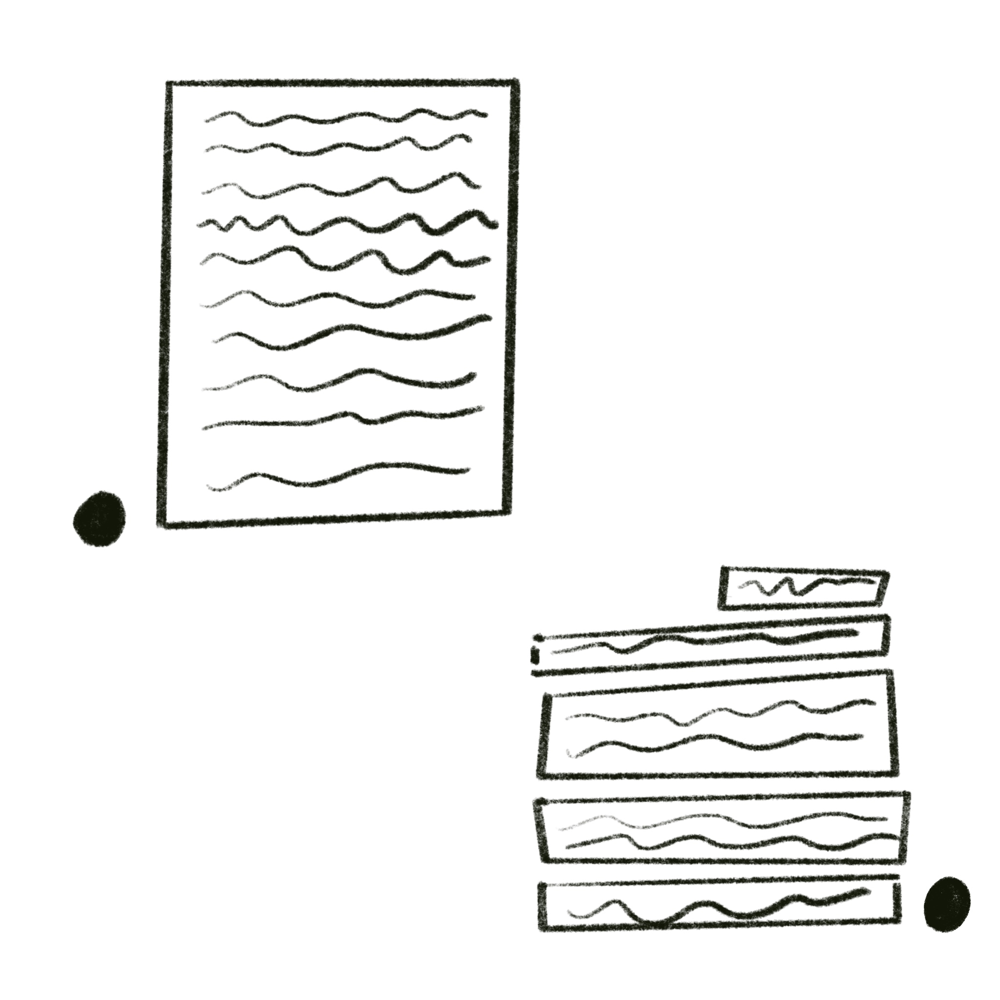

A website where everyone has a little house, and inside this little house you can store all the information you want. A virtual library, cooking videos, studying tips, DIY projects etc. You can use your own designs for the house/furniture. Your friends can visit your house and see these various collections and can also leave little letters in your mailbox.
With all of this talk about complexcity and comapring a computer to an actual city, my idea is to create a website that when you search for one thing, it also shows you all these things connected to that one thing that you might have never known were interconnected.
A website where you can have conversations with complete strangers on different topics. Like a pen pal but online. Everyone’s identity remains anonymous and the only thing others can see is a little black circle which acts as profile picture.
